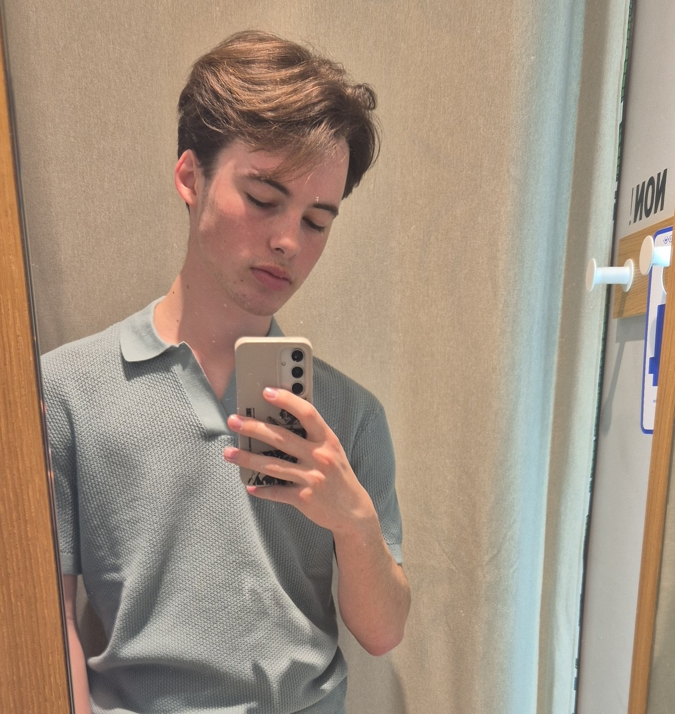

Bienvenue sur le portfolio de Joris !
À propos de moi

Je m'appelle Joris. Passionné par l'informatique, je maîtrise déjà plusieurs langages de programmation tels que le HTML, le CSS, Python et JavaScript, je commence aussi en Lua et C.
Le développement web me passionne particulièrement, j'aime créer des projets uniques qui combinent créativité et fonctionnalité. Toujours curieux et à la recherche de nouvelles opportunités pour apprendre, j'adore concevoir et relever de nouveaux défis techniques.
Mes projets
Voici un aperçu de quelques-uns de mes projets personnels :


Mon stage de seconde chez Epitech
Semaine 1
Lundi : Ma semaine a commencé par une matinée d'accueil , suivie d'un jeux "ice breaker" pour faire connaissance avec les autres stagiaires. L'après-midi a été entièrement consacrée au lancement et au développement de ce projet de Web Portfolio.
Mardi : La journée a débuté par l'accueil habituel avant de suivre une conférence dédiée à la cybersécurité. L'après-midi s'est avérée très ludique avec l'activité "Vie ma vie d'enquêteur OSINT", où nous avons relevé des défis de type CTF (Capture The Flag) et joué à Geoguessr.

Mercredi :le matin j'ai assisté à une conférence passionnante sur l'IA. La fin de matinée s'est poursuivie avec une activité intitulée "Poké Poireau" où nous avons dévelloper l'IA de notre Poireau de combat. Enfin, j'ai passé toute l'après-midi à découvrir et pratiquer les bases de l'algorithmie avec un défie de cryptogrphie.
Jeudi : La matinée a commencé par une conférence "Apprendre à Apprendre". Nous avons ensuite enchaîné sur un "Atelier Canard" pour faire le lien avec le thème aborder dans la conférence. L'après-midi était technique avec une initiation pratique à l'électronique et à la programmation sur des cartes Arduino.
Vendredi : Cette dernière journée de la semaine s'est déroulée entièrement à distance. J'ai attaqué la matinée par un module de travail en ligne sur l'Intelligence Artificielle (IA). J'ai ensuite conclu cette première semaine de stage en travaillant de chez moi sur la finalisation de mon Portfolio.
Semaine 2
Lundi : La semaine commence par une conférence métiers AD2N - KPF, complétée par des témoignages d'étudiants et des démonstrations de leur projet.L'après-midi était entièrement consacré à l'avencement de notre portfolio.
Mardi : La matinée du deuxième jour est très orientée vers les nouvelles technologies avec une conférence sur l'IA animée par Google, en parallèle d'une session dédiée à la NASA . Après la pause du midi, les étudiants basculent sur de la pratique dans la salle DMR pour développer un projet de Morpion IA.
Mercredi :Le milieu de semaine s'ouvre sur une conférence sur les métiers de la cybersécurité animée par Stormshield, ainsi qu'une intervention sur les métiers du jeu vidéo. L'après-midi notre objectif était de recoder le célèbre jeu Snake en JavaScript.
Jeudi : Cette quatrième journée s'organise un peu différemment puisque la journée se déroulée a distance. Au programme, nous suivons une présentation sur l'orientation et les différents métiers du secteur de l'informatique. L'après-midi offre ensuite un temps en autonomie spécifiquement réservé pour avancer et finir le Portfolio.
Vendredi : La dernière journée débute par une session administrative et d'information importante concernant le rapport de stage et la fiche de convention. Après le déjeuner, la semaine se clôture avec un forum, la distribution des diplômes et un goûter de fin de session.